Вам уже есть 18 лет?
Сайт производителя пива, сидра и медовухи содержит информацию об алкогольной продукции.
Сайт производителя пива, сидра и медовухи содержит информацию об алкогольной продукции.
Пивоварня «Старый завод» располагается в уникальном заповедном районе Рязанской области — Мещере, в 105 км от Рязани, в одном из цехов старинного спиртзавода.
Село Городковичи и соседний Лакаш получили толчок к развитию при Фёдоре Андреевиче Беклемишеве и его дочери Елизавете Фёдоровне: при них были построены стекольный и винокуренный заводы. Винокуренный завод возвели в 1911 году по проекту известного немецкого инженера и предпринимателя Франца Круля.
Лакашинские бондари славились мастерством по всей России. Исторические фотографии усадьбы и бондарей нашли у жителей села — теперь они в музее пивоварни. В 2021 году заводу исполнилось 110 лет.
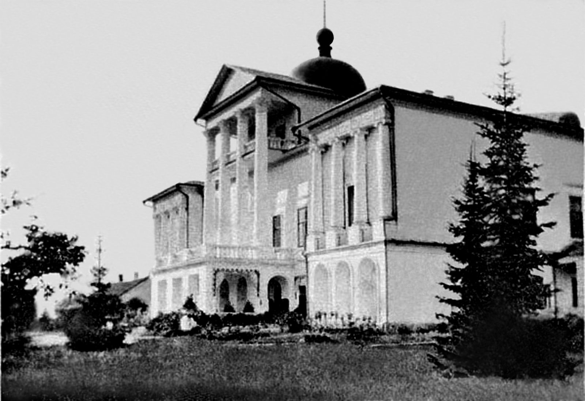
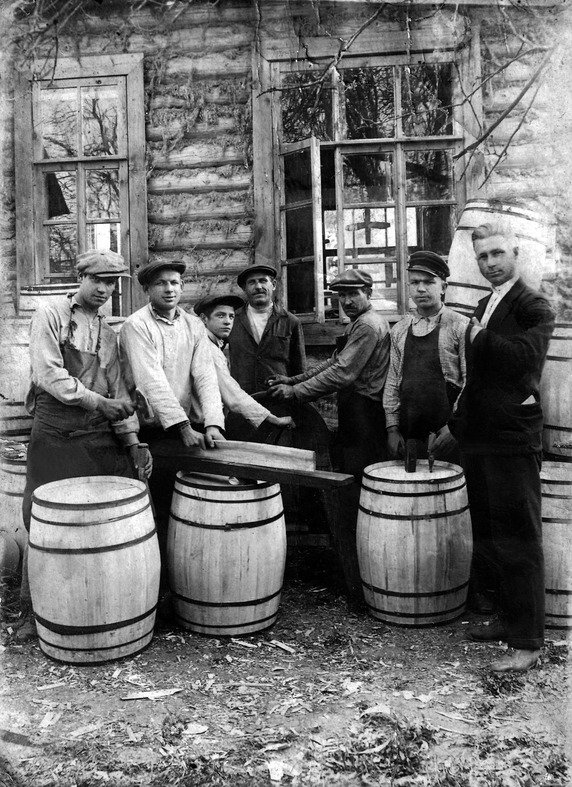
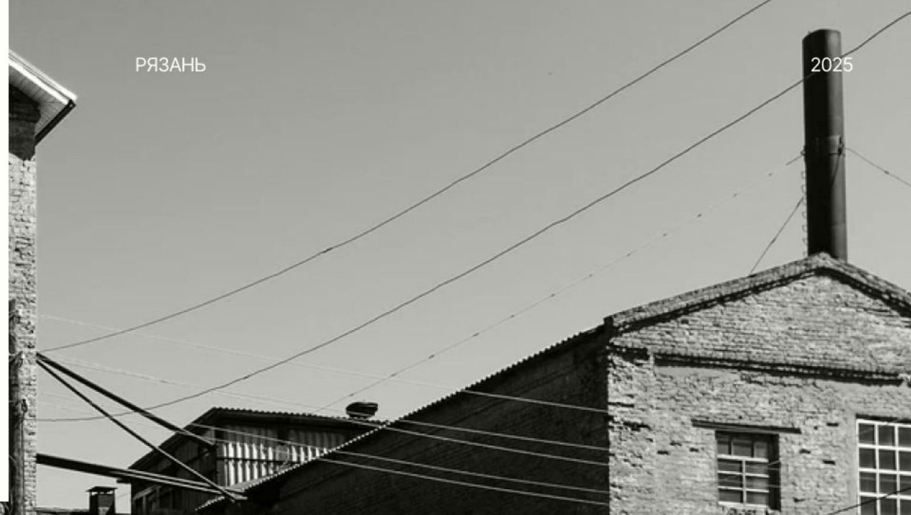
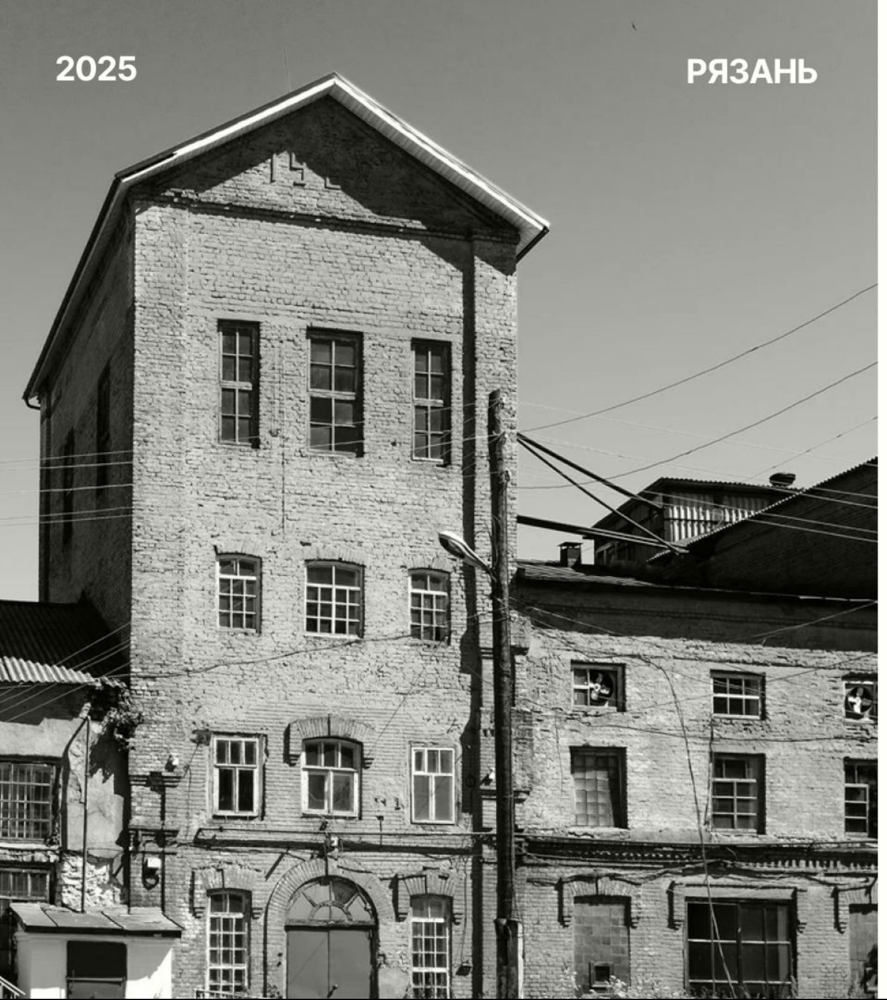
Натуральные соки местного производства, мёд от пчёл рязанского края и пряности
Классическая технология, контроль всех процессов, не фильтруем и не пастеризуем
Используем 100 % солод
Немецкий, американский и русский, в том числе сухое охмеление
Собственная скважина 85 метров и глубокая очистка
Профессиональное оборудование из нержавеющей стали
Медовуха варится на мёде своих пчёл, сидр — на соке прямого отжима из местных яблок. Ингредиенты собираем в том же заповедном краю, где стоит завод.
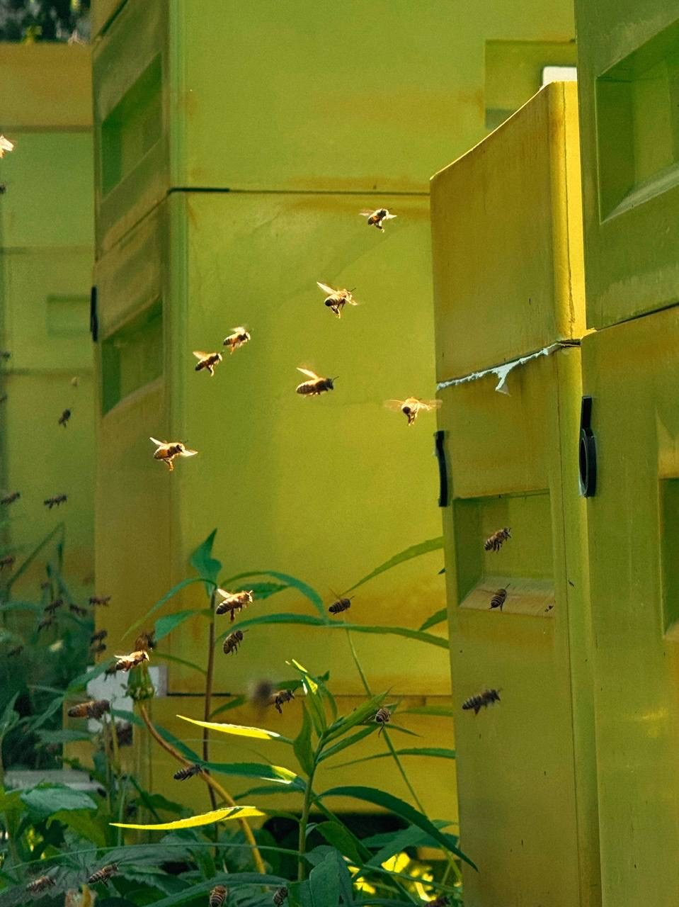
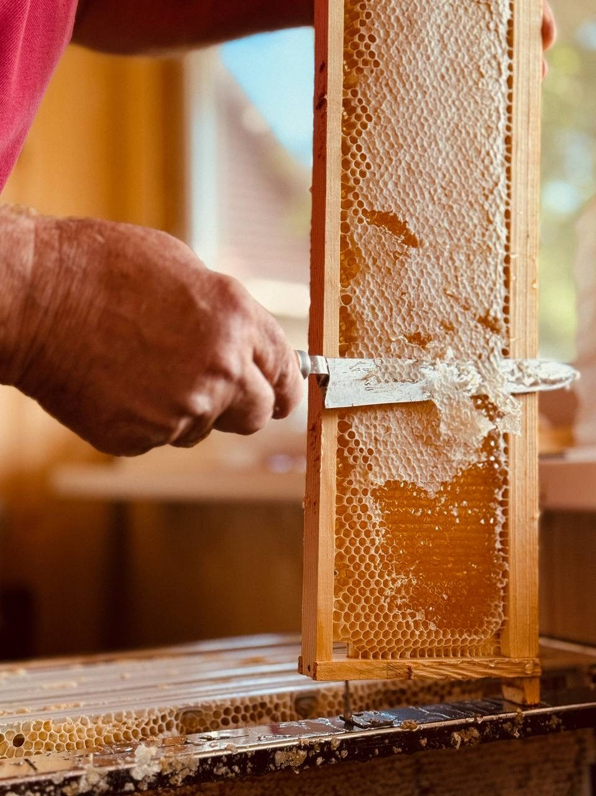
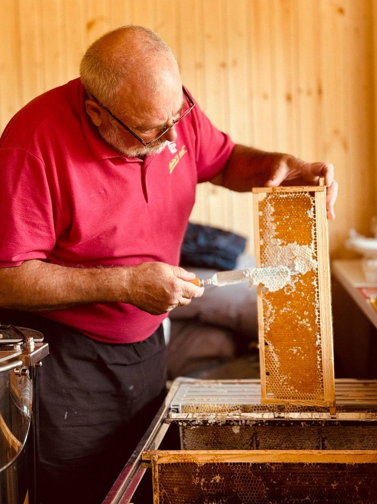
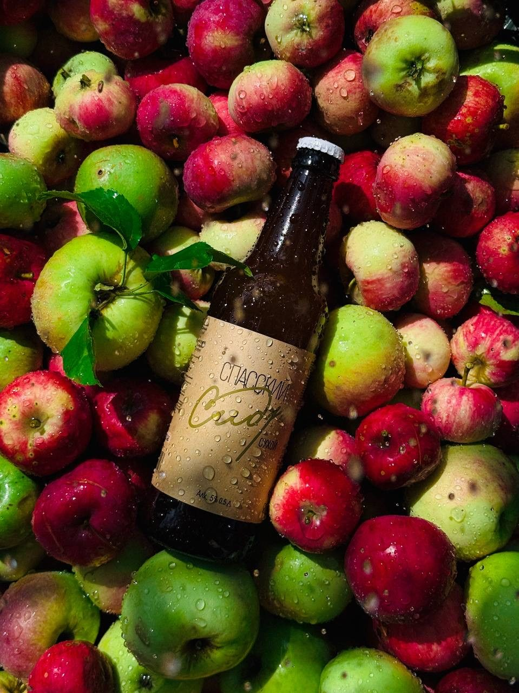
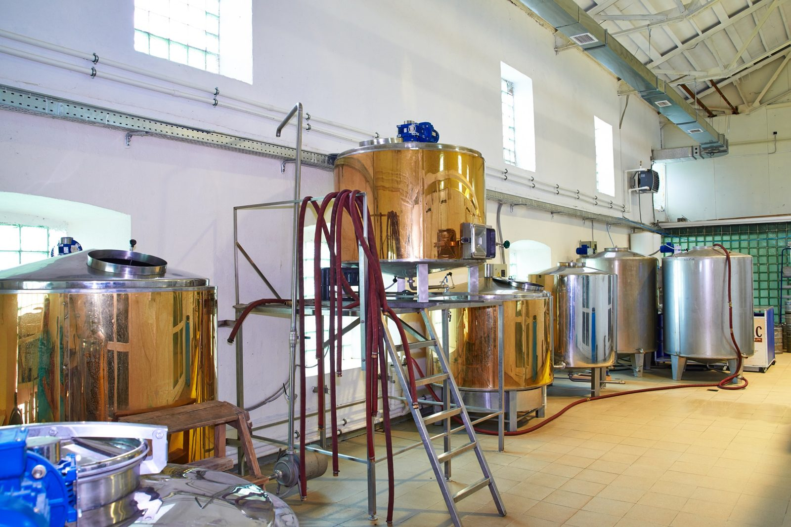
Готовые напитки разливаем в кеги 20 и 30 л, ПЭТ 1–1,5 л и стекло 0,5 л. Хранение +2…+10 °C.
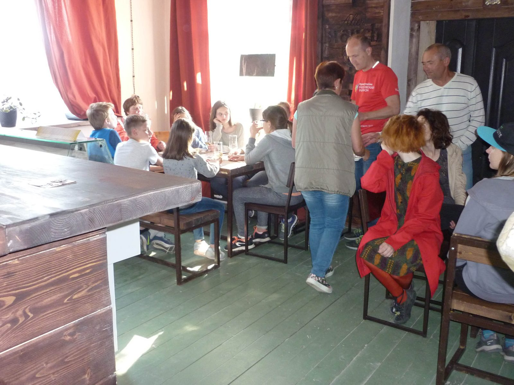
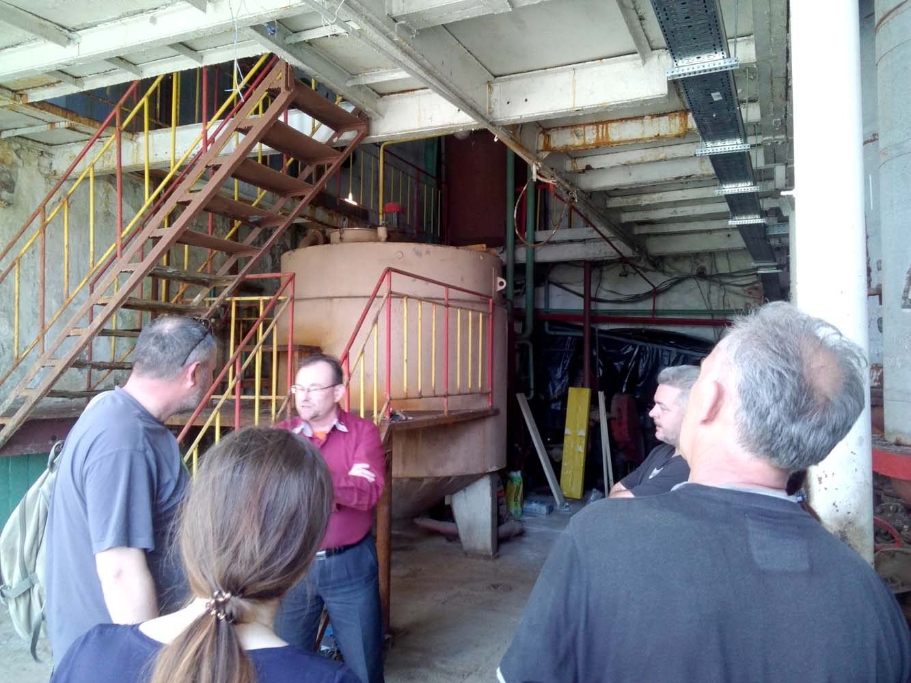
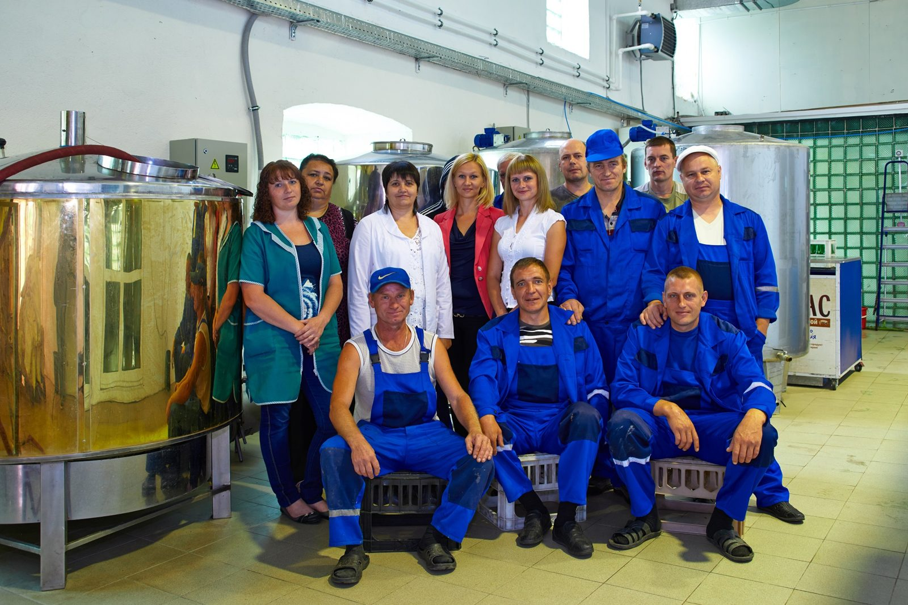
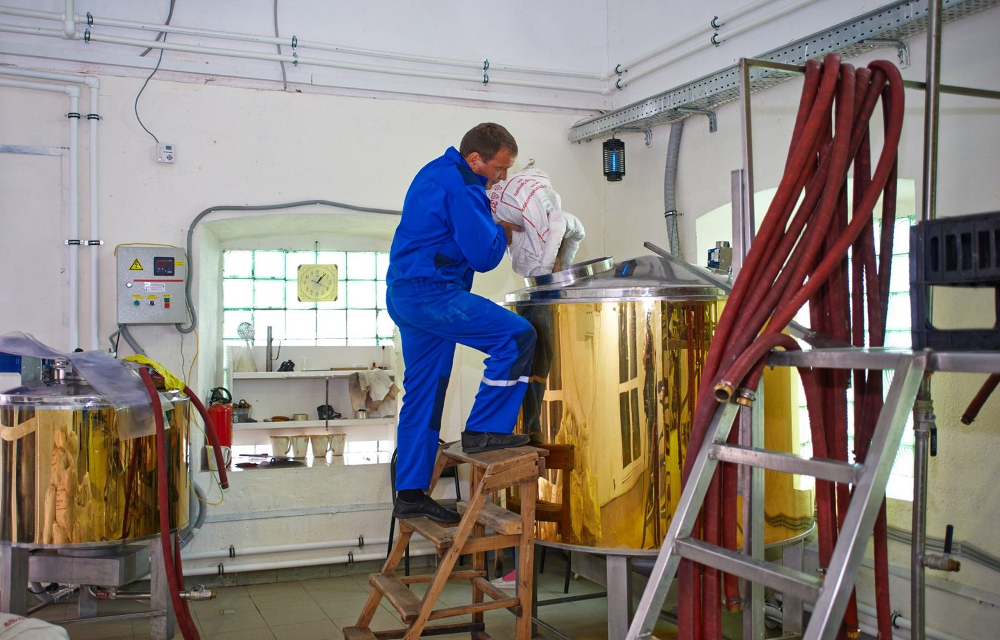
Экскурсии с дегустацией: история здания и местности, технология, цех, музей. Маршрут выходного дня: Рязань — Старая Рязань — Ижевское — Городковичи — Окский заповедник.
проводятся ли экскурсии сейчас, расписание, цена, как записаться.
Записаться